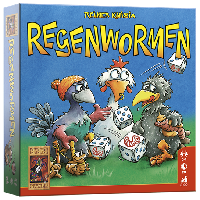

Regenwormen

Informatie van spel
Regenwormen is een leuk en tactisch dobbelspel dat je met 5 spelers kunt spelen.
Het is een eenvoudig spel met makkelijke regels, ideaal voor gezinnen en spelavonden.
In Regenwormen dobbelen spelers om punten te scoren en tegels met regenwormen te verdienen.
Door slim te kiezen welke dobbelstenen ze bewaren en risico's te nemen, kunnen spelers elkaar te slim af zijn!
Het spel duurt meestal tussen de 20 en 30 minuten. De spelregels zitten in het pakket.
Regenwormen kost rond de €15 en is geschikt voor spelers vanaf 8 jaar.